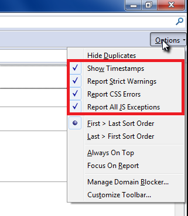
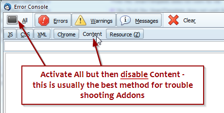

QuickFolders.org
| Home Installation Version History FAQ + Tips Support QuickFolders! Screenshots Bugs + Feature Requests Troubleshooting Menu On Top |
Troubleshooting
Bugzilla - why, and how?
Bugzilla is free and open to anyone who registers with it. The big advantage here is that many users can share bug information, or view feature requests or planned new features and track these, in true open source fashion. From time to time we will also publish patched prerelease versions by attaching them to their relevant bugs.
When submitting new bug reports, please search first whether the bug
is already submitted to avoid yours being marked as duplicate.
For feature requests, submit a bug and select "enhancement" in the severity dropdown:

No Software is without trouble.
We try to publish software with less of trouble for you but if you have some, we
highly recommend to install the
Console² Extension
first. Or use this
patched version by right-clicking / save as and then dragging the file into your Extensions list.
Console² has more detailed options for the logging process than the default error console of Thunderbird.
Console² Configuration
1. Click on "Options" in the top right corner of Console² Window and select the following options:

2. Click the "All" button on top left of Console² Window to see those entries inside the Log Window only
3. Disable the "Content" logging using the 5th button on the second toolbar below. This will make sure to remove any "noise"
introduced by errors in the emails themselves. Usually we do not need these error messages as they only muddy the waters

4. Often it is necessary to provide more context - you can tell QuickFolders to log more information of what it does.
-
Please activate the debug option on the bottom of QuickFolders ⇒ Advanced ⇒ Settings Tab.

- You can create additional more specific messages by right-clicking the debug checkbox and activating additional options (double click on the entry).
Please do not activate everything as this will make the log unreadable also - if you send us a support email
we can usually advise what debug options to activate.

Investigating the Error Log
So once you have Console² configured, what can you do it? Remember you have to always open the log window to start logging errors / activity so make sure you do this with Options > Error Console just before you do the trouble shooting. For convenience, you can also add a toolbar button by right-clicking thunderbird toolbar and selecting customize toolbar.... The icon is a red hexagon.
STEP 1 - Setting up the Investigation
If you want to start a fresh clean log it is always good to click the "Clear" button at the top immediately before you carry out the actions you investigate. Also make sure to not repeat the action do it once until the problem happens.
STEP 2 - Saving the Error Log
Then you need to copy the error log into a text file or email. Simply use the console
right-click menu and choose "Select All". Then "Copy". Do not take a screenshot of the error log as it is much
harder to investigate - text is nice as you can search and order it!
You can always send us error logs in an email if you are having problems.

A note on typical Error messages: If there is a problem somewhere in Thunderbird code or an Addon then warnings and errors usually provide a location of where this happened. If the location starts with "chrome://" you will know this happens in THunderbird or and Addon and not in a web page or within an email. The line number is also very helpful in tracking down particular issues.
Any messages that we generate during "debug" logging typically look like this:
QuickFolders {FUNCTIONS.INSERTTEMPLATE} 14:2:39.705 [0 ms]
Add Signature...
As you can see we start all our debug logs with the name of the addon (QuickFolders). This can be followed by an optional {OPTION} which shows which additional area we are debugging. This is then followed by a time stamp (14:2:39.705) and a time measurement [0 ms] since our previous output. This makes it possible to pin point any operations that take unusually longe. Underneath we show additional information about what QuickFolders is doing at the moment.
STEP 3 - Looking for Particular Problems
When you have completed the logging phase, you can now use the "Errors", "Warnings" and "Messages" buttons
to filter out particular problems. You can also use the Search box if you like, e.g. you could type a keyword
like "quickfolders":

Note however this might actually hide the real cause of the problem so this is only for advanced users.
If you decide to send us a log, do not remove anything from it. To help us, just follow the initial instructions
above and disable content logging and start with an empty log (only test one thing at a time).
Now you get error entries inside Log Window listed like this example
⇒ This example shows a warning "yellow triangle" as result of JavaScript strict mode ("use strict"; ⇒ ECMAScript5) which we use

TIP: By selecting Edit ⇒ Paste, these log entries can be inserted directly from your clipboard into your e-Mail to us or into a bug report on Bugzilla.
ATTENTION: Please send us error entries with "chrome://QuickFolders/.." only, all other log entries are probably unrelated.